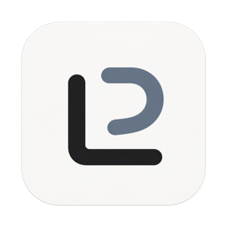
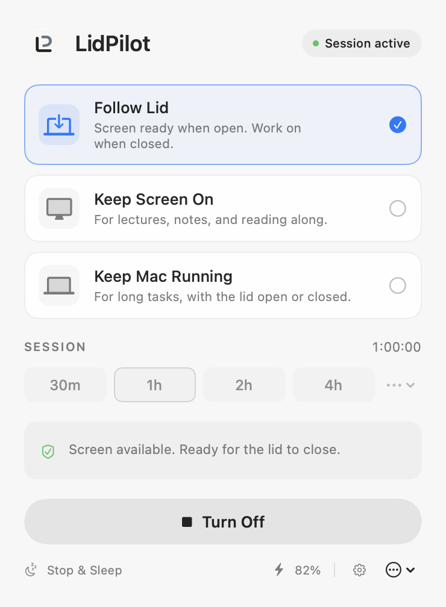

01 / PRESENT
Stay with
the lecture.
Your slides, notes, or reference material stay available—without a tap just to keep the screen awake.
Keep Screen OnBrightness stays yours.

LidPilot Open sourceStay with the lecture. Leave the work running.
One quiet menu-bar utility. You decide when to stop.
Apple Silicon · macOS 15+ · Free & open source

Screen ready when open. Work continues when closed.
Three modes. One place to stay in control.
Two rhythms. One Mac.
For the moments when your Mac’s usual sleep schedule doesn’t match yours.
Your slides, notes, or reference material stay available—without a tap just to keep the screen awake.
Give a build, download, or long-running task time to finish while your Mac stays on a ventilated desk.
Screen available while open. Mac kept running while closed. A fresh safety check when you reopen.
Meet LidPilot
A short introduction.
Made around the real native interface.
Keep the lecture in view. Let the build finish, even when you close the lid. LidPilot puts those choices right in your Mac’s menu bar. Keep Screen On for lectures, reading, and focused work. Keep Mac Running for builds, downloads, or a local AI task. Or let Follow Lid connect the two. Choose how long you need it. Stop whenever you want. Native to macOS. Free and open source. Install with Homebrew, or download it from lidpilot.app. LidPilot. Your Mac, on your time.
Download the timed transcriptCalm, by design
30 minutes, an afternoon, a custom duration, or a specific end time. Indefinite when you need it.
Battery and thermal safeguards can pause a session. Clear status tells you when cleanup needs attention.
Nothing starts keeping your Mac awake until you ask. Stop & Sleep verifies cleanup before requesting sleep.
Free now. Open for everyone.
A native Mac utility that gives your screen—and your work—the time they need. Free, open source, and yours to control.
Apple Silicon · macOS 15+ · MIT licensed
LidPilot 2.0.0 · Developer ID signed and notarized.
Prefer the Terminal?
Install with Homebrew. Free and open source, just like the direct download.
brew install --cask Marios1111/tap/lidpilot
Already have Homebrew? Paste this into Terminal.
New to Homebrew? The direct download above is all you need. Before removing or replacing an existing LidPilot installation, follow the cleanup steps.
A few useful answers
Keep awake while a command runs, with independent manual and task sessions. V2 adds an opt-in CLI, global shortcuts, clearer diagnostics, update ownership and polished Settings. Codex and Claude Code hooks are available as experimental adapters. Read the developer tools guide.
No. Your brightness controls stay available. Preventing display sleep also suppresses native idle dimming; independent “dim but never turn off” isn’t provided.
The built-in display can take a little time to go dark after you close the lid. Timing depends on macOS; expect a delay rather than an instant blackout.
Follow Lid and Keep Mac Running require a small signed helper approved through macOS. It controls one fixed sleep setting with verification and recovery safeguards. Keep Screen On works without it.
Keep your Mac on a stable, ventilated surface during a session. Thermal safeguards are a backstop, not a substitute for airflow.
Signed update checks wait until LidPilot is Off. Installation is manual and requires verified cleanup and an open lid. To remove LidPilot, turn it Off, resolve any recovery warning, remove its helper in Settings, disable launch at login, and quit before removing the app.
Apple Silicon MacBooks running macOS 15 or later. The validated setup uses the built-in MacBook display. External displays, docks, and virtual displays remain unvalidated.